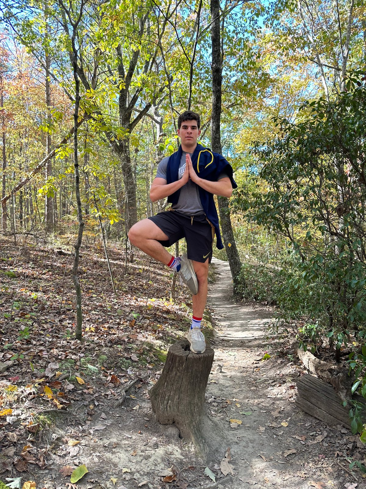
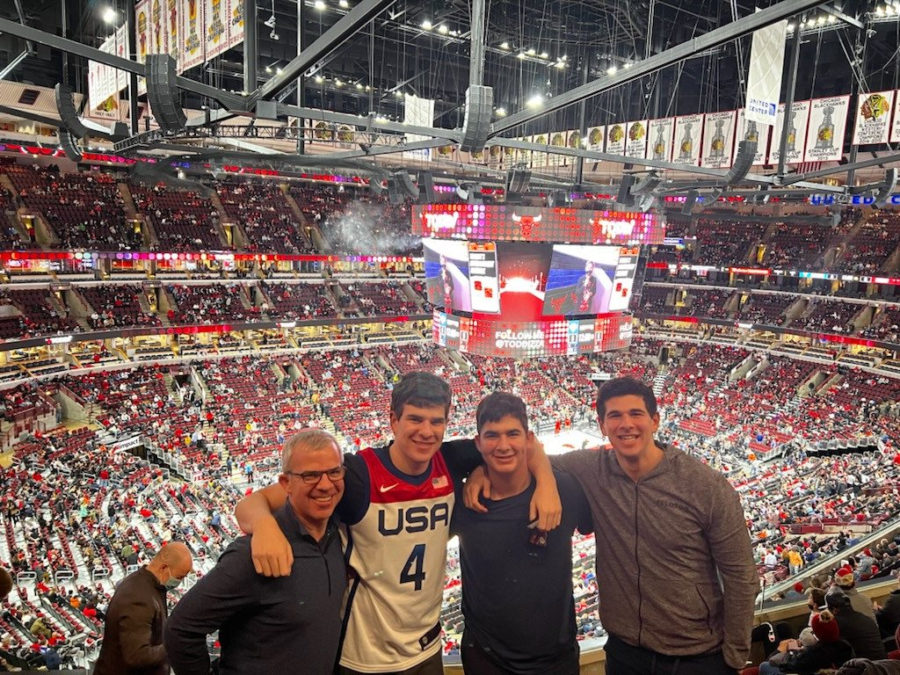
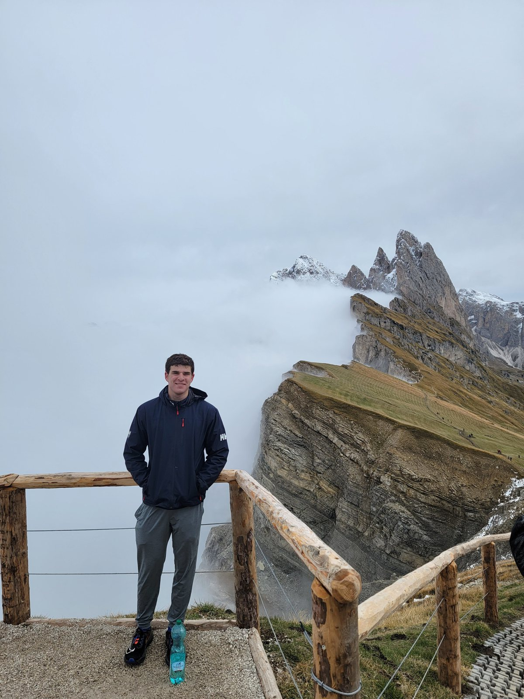
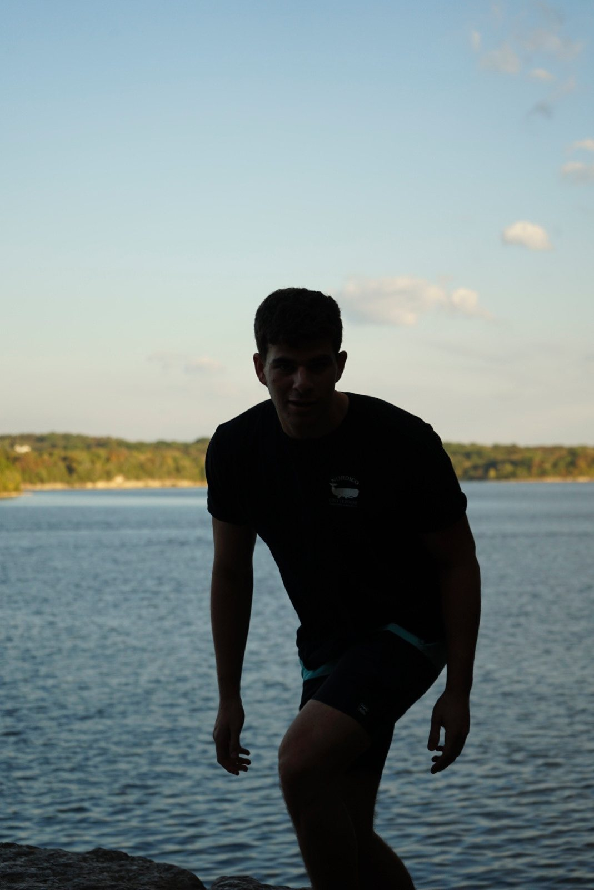

About Me
Hello! My name is Ari Horwitz, I am originally from St. Louis and currently pursuing my Master’s in Mechanical Engineering at Georgia Tech after completing my undergraduate degree at Vanderbilt University.
My favorite part of engineering is seeing the entire design process go from ideation to prototyping to iteration. I have experience designing for many manufacturing processes and recently have gotten more into additive manufacturing and 3D printing. My main area of interest is what I call Bio-Mechatronics, a fusion of biomechanics, mechatronics, and rehabilitation engineering. I love the idea of using design to make a positive impact on people's lives.
Outside of engineering, you will likely find me playing intramural basketball or tennis, or just hiking with my dogs. Recently, I've gotten into landscape and nature photography, and I am excited to learn how to master this skill.
This portfolio is a small snapshot of my engineering journey, showcasing projects and experiences that reflect my interests both in and out of the classroom!




Resume
Download PDFEducation
Georgia Institute of Technology
M.S. Mechanical Engineering, Thesis Track
Vanderbilt University
B.E. Mechanical Engineering, cum laude
Experience
Physiology of Wearable Robotics Lab
Graduate Researcher, Georgia Tech
- 13% metabolic cost reduction
- 900 g · 60 Nm
- 3 exoskeletons built
- Thesis: ankle exoskeleton biomechanics on a natural outdoor course, studying age-related differences in walking with young and older adults (65+) using motion capture, metabolics and EMG. See the project
- Developed an untethered, cable-driven ankle exoskeleton with machine-learning torque and power estimation for adaptive plantarflexion assistance.
- Built 3 ankle exoskeletons, including a 900 g carbon-fiber design capable of 60 Nm, comparing motor placement, Bowden cable routing and shoe interfaces.
- Built an upper body sensor suit with 9 IMUs, smart insoles, custom PCBs and an NVIDIA Jetson.
Zelik Lab for Biomechanics & Assistive Technology
Research Assistant, Vanderbilt University
- Developed a sensor fusion algorithm to estimate foot orientation from a smart-insole IMU.
- Built biomechanical models with Vicon motion capture and Visual3D to inform ankle exoskeleton design.
Rehabilitation Engineering & Applied Research Lab
Research Intern, SURE Program at Georgia Tech
- Investigated the role of AI in assistive technology product development and recommendation, and worked with clinicians on device selection for mobility-impaired patients. See the project
CHROME Lab
Research Intern, Saint Louis University
- Shrank a haptic wearable with custom miter gears and programmed servo actuation, and designed 3D-printed ball-bearing inserts to adapt a blind ice hockey puck for roller hockey.
Publication
Leveraging AI and Customer Reviews to Evaluate Technology Used by People with Disabilities
Taylor Allen, Ari Horwitz, Stephen Sprigle. Disability and Rehabilitation: Assistive Technology.
Selected projects
4 DOF Surgical Robotic Arm (TRACI)
Led the mechanical linkage design and inverse kinematics for end-effector control; trajectories generated in MATLAB and executed on Arduino for real-time tuning.
Animatronic Eyeball for ANIMAX Designs
Senior design: led a 360° eyeball driven by 3 omni wheels and stepper motors, with a 9-axis IMU for wireless orientation tracking and a live Python 3D visualization.
Mechatronic Face-Tracking Camera
A camera robot that detects and follows a subject in real time, with a servo for centering and an ultrasonic sensor for distance-based LED feedback.
Skills
Software
- VICON Nexus
- OpenSim
- Visual3D
- SolidWorks
- Fusion 360
- Arduino
- MATLAB
- Excel
- Java
Prototyping
- 3D printing & rapid prototyping
- Soldering
- Microcontrollers
- Carbon fiber
- Machining
Outside the lab
Basketball (Vanderbilt intramural champion, 2024), tennis, photography, cooking and skiing.